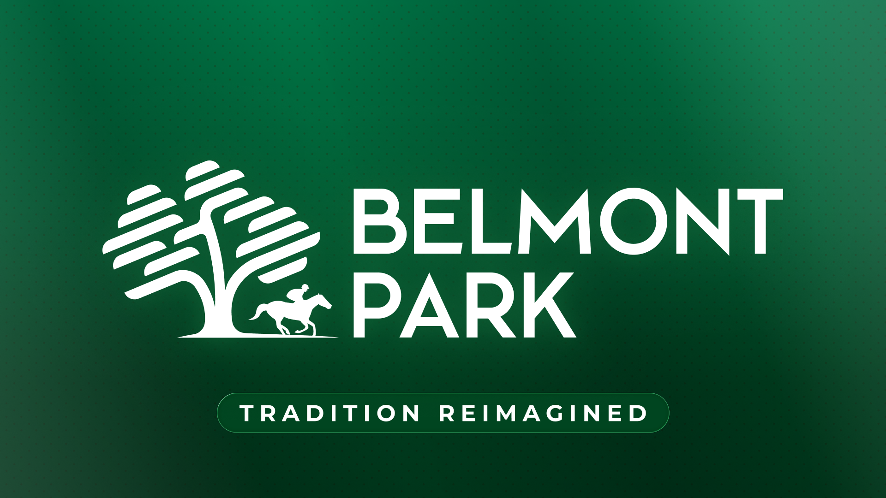

Renegade, favorito 2-1 del Belmont Stakes 158: Golden Tempo arranca desde el 9 en Saratoga
El sorteo del 158º Belmont Stakes, disputado el lunes 1 de junio, dejó un campo de nueve ejemplares para la última joya de la Triple Corona estadounidense, que se corre este sábado 6 de junio en Saratoga Race Course con salida a las 19:04 hora local. Renegade, preparado por Todd Pletcher y con Irad Ortiz Jr. en la…

Uso editorial
El sorteo del 158º Belmont Stakes, disputado el lunes 1 de junio, dejó un campo de nueve ejemplares para la última joya de la Triple Corona estadounidense, que se corre este sábado 6 de junio en Saratoga Race Course con salida a las 19:04 hora local. Renegade, preparado por Todd Pletcher y con Irad Ortiz Jr. en la silla, abrió como morning-line favorito a 2-1 desde el cajón 4.
El ganador del Kentucky Derby, Golden Tempo, regresa tras saltarse el Preakness y partirá desde el poste 9 al exterior, montado de nuevo por Jose Ortiz para la preparadora Cherie DeVaux. Renegade fue derrotado por una cabeza por Golden Tempo en Churchill Downs, lo que añade morbo al duelo. La segunda referencia en cuotas es Chief Wallabee, del equipo Bill Mott–Junior Alvarado, con cajón 3 y 3-1.
La 158ª edición vuelve a Saratoga mientras Belmont Park finaliza una remodelación valorada en 455 millones de dólares; la nueva planta reabrirá el 18 de septiembre y el clásico regresará a su milla y media tradicional en 2027. La prueba de este año mantiene la distancia adaptada al óvalo de Saratoga y se completa con el ganador del Peter Pan, Growth Equity, y otros aspirantes con potencial de quedada larga.
— Redacción de Galope al Día